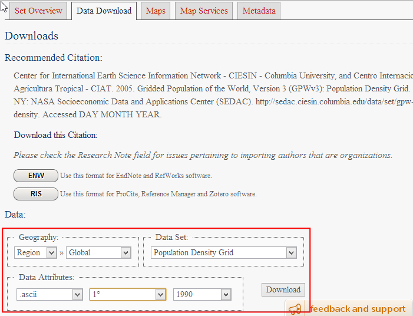
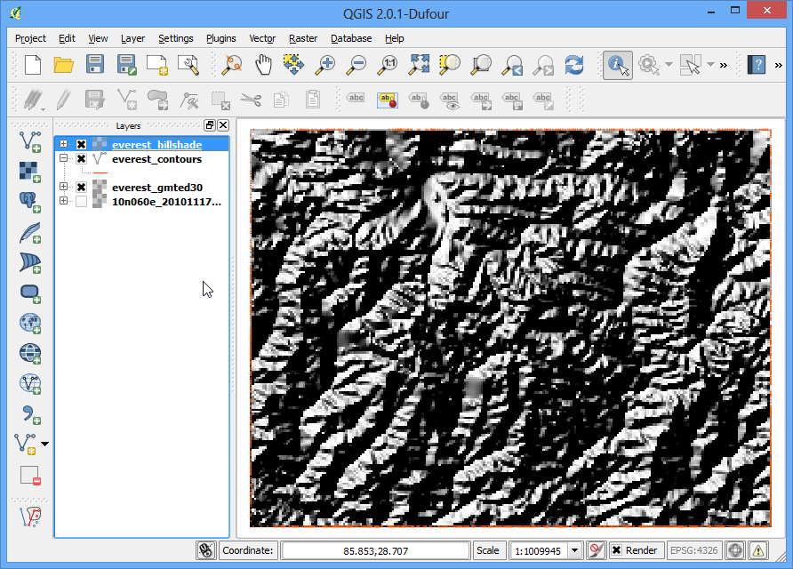
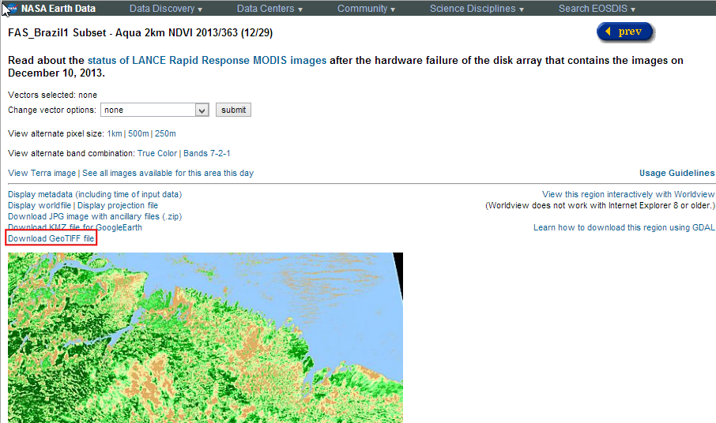

Open BIL, BIP or BSQ files in QGIS
[ Download PDF A4 Letter ]
When dealing with remote sensing and scientific datasets, one often comes
across data in formats like BIL, BIP or BSQ. The GDAL library - which is used by QGIS to read raster files - has
support for these formats, but it cannot open these files by itself. We will go
through the process of creating support files so these formats can be read by
QGIS.
Band interleaved by line (BIL), band interleaved by pixel (BIP), and band
sequential (BSQ) are common methods of organizing image data for multiband
images. (Read more about these formats)
Typically, these files are accompanies by a .hdr file. If your dataset came
with a .hdr file, make sure the root name of the .bil, .bsq or .bip file and
the .hdf files match and they are in the same directory. For example, if the
file is called image.bil , the associated file should be named image.hdr and
present in the same directory as the image.bil file. Then when you go to
, select the image.bil file and
it will open without problems.
Many a times, the files do not come with an associated .hdr file. In such
cases, you must create this file by hand as shown in this tutorial.
Procedure
- Unzip and extract the .bsq file. On Windows, you may use the excellent
7-Zip utility to read and extract .gz file. You
will see that you only have a .bsq file named gl-latlong-1deg-landcover.bsq.
There is no hdr file.

- Note that if you try to open the gl-latlong-1deg-landcover.bsq file in
QGIS as it is, you will get an error message.

- To overcome this error, we will create a header file with .hdr extension.
The header file contains information about the dataset and how it is organized.
Usually, this information is supplied as part of Metadata for the dataset.
If you do not have the metadata, look at the website or documentation for
clues. Some of the information can be guessed if you do not know it. In case
of this dataset, the data download page links to the metadata.
Download the metadata and open it.

- The .hdr file needs to be a plain text file in the following format. Some of
these parameters are given to us and some needs to be worked out. Learn
more about the format.
ncols <number of columns or width of the raster>
nrows <number of rows or height of the raster>
cellsize <pixel size or resolution>
xllcorner <X coordinate of lower-left corner of the raster>
yllcorner <Y coordinate of the lower-left corner of the raster>
nodata_value <pixel value to be ignored>
nbits <number of bits per pixel>
pixeltype <type of values stored in a pixel, typically float or integer>
byteorder <byte order in which image pixel values are stored, msb or lsb>
- Open a text editor and create a file in the format specified in the previous
step. Save the file as gl-latlong-1deg-landcover.hdr. Make sure the file
doesn’t have .txt at the end. Some of the values in the text files are
easy to understand. the ncols and nrows come from the metadata as the
Number of Lines and Number of Pixels per Line. The cellsize is 1 as the
Pixel resolution from the metadata. The X,Y coordinate of lower-left corner
needs to be worked out by us. Since the file covers the entire world and
units are lat/long, xllcorner and yllcorner are -180 and -90
respectively. We do not have any information about the nodata_value, so -9999
is a safe bet. From metadata again, Pixel Format is Byte, so nbits will
equal to 8 and pixeltype will be byte_unsigned. We do not have
information about the byteorder, so leave it as msbfirst.

- Now that you have the header file, put it in the same directory as
gl-latlong-1deg-landcover.bsq. Then in QGIS, go to
. Select
gl-latlong-1deg-landcover.bsq as your input and click Open.

- In the next screen, you may be prompted to choose a CRS. Since the data is
in Lat/Long, choose WGS84 EPSG:4326 as your CRS. Now you will see the
dataset loaded in QGIS.